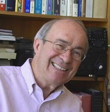

Please note: the AAS Obituaries are temporarily being hosted on this website while their full content is being ingested into the PubPub publishing platform newly adopted by the Bulletin of the American Astronomical Society. When the migration is complete, your existing links will take you to the final, migrated content. Contact peter.williams@aas.org with any questions.
Peter A. Wehinger (1938-2015)
Image courtesy: Ray Bertram
Peter Augustus Wehinger, an observational astronomer known for his work on comets and quasars, died in his sleep on 27 April 2015 at the age of 77 in his home in Tucson, Arizona. He had battled non-smokers’ lung cancer for most of the previous year. His career spanning almost fifty years began with construction of a 1.3-m telescope at the University of Michigan and ended after retirement from the Steward Observatory where he helped advance major telescope projects and raise funds for student scholarships. He was born and grew up in Goshen, New York where he developed an early interest in astronomy. At age 15 he ground, figured and polished a 6-inch telescope mirror in the kitchen of his family home with encouragement from his parents. Backyard explorations of the sky with his home-built telescopes plus participation in high school science projects and amateur astronomy events inspired and laid the foundation for Peter’s career in observational astronomy.
After graduation from Goshen High School, Peter completed a physics major at Union College and a master’s degree in astronomy at Indiana University two years later. He earned his doctoral degree from Case Western Reserve University after which he joined the Department of Astronomy at the University of Michigan. There he oversaw the funding, design and construction of the 1.3-m telescope, initially located at a dark site near Ann Arbor. Still in use and now named the McGraw-Hill Telescope, this facility has since been relocated to a mountain top site on Kitt Peak, Arizona.
Peter married Susan Wyckoff, an astronomer and a longtime collaborator, who joined him at the University of Michigan. Shortly afterwards they were both recruited by the Department of Physics at Tel-Aviv University which with help from the Smithsonian Institution had recently established the Wise Observatory. Located in the Negev Desert the observatory was equipped with a 1-m telescope and state-of-the-art image tube detectors that had exceptional sensitivity in the red spectral region. In 1973 Wise Observatory spectra of comet Kohoutek revealed an array of strong emission features with no apparent laboratory counterparts. Laboratory spectra obtained about the same time by Gerhard Herzberg and a higher resolution comet spectrum from George Herbig at Lick Observatory led to the definitive identification of ionized water in the comet, one of the strongest indicators at that time of the high abundance of water in a comet.1
In the 1970s and 1980s with home bases at the Royal Greenwich Observatory and the Max Planck Institute for Astronomy in Heidelberg, Peter exploited the clear, dark skies of observatories in Australia, Chile, Hawaii and Spain where he conducted observing programs to image quasars. These images were among the first to reveal extended nebulosity around some of the quasars.2 Collaborators in this early work included Thomas Gehren, Alec Boksenberg and Hy Spinrad.
In the mid-1980s Peter joined Susan in the Department of Physics at Arizona State University where they co-led the spectroscopy arm of the International Halley Watch, a NASA-sponsored project to coordinate, collect and archive ground-based and spacecraft observations of Halley’s comet. This world-wide campaign in the pre-internet era culminated in the assembly of one of the first astronomical digital archives. The Halley Watch data archive remains accessible online through NASA-sponsored links.3
Peter capped his career by collaborating in fund raising for large telescope projects and student scholarships at the University of Arizona. From 1995 until his retirement in 2012 he served as a development officer and staff astronomer at the Steward Observatory. In this capacity Peter was involved in advancing major projects such as the Large Synoptic Survey Telescope, the Giant Magellan Telescope and the Tokyo Atacama Observatory. Essential components of the large telescopes are mirrors of unprecedented size, six to eight meters in diameter. The initial shapes of the mirrors are achieved by spinning tons of molten glass, a technique developed by Roger Angel at Steward Observatory. Alluding to Angel’s spun-glass mirror-casting technique, Peter was once quoted as saying "Making big mirrors is like Julia Child making a soufflé –– success is in the details". Peter also played major roles in establishing the Arizona Astronomy Board and creating the Mt Lemmon Sky Center. The names of two main-belt asteroids mark Peter’s diverse legacy in astronomy. The first, 4432 McGraw-Hill (1981 ER22) was initially imaged with the 1.3-m telescope. The second asteroid was discovered and named after Peter by Arizona Astronomy Board member and amateur astronomer, the late David Healy.
Peter was a highly effective and entertaining communicator who devoted much of his life to sharing his passion for astronomy. Whether teaching in a classroom or popularizing astronomy in a public forum, Peter’s enthusiasm for astronomy was palpable and contagious. He was always a strong advocate for science students, particularly women and other underrepresented groups. At Steward Observatory Peter worked tirelessly to raise and identify financial resources to aid students. To this end a fund in his memory for astronomy graduate students has been established at the Steward Observatory. Contributions to the “Peter Wehinger Fellowship Fund” will endow the fund and may be made online or by check made payable to “University of Arizona Foundation” with a note on the memo/subject line of, For Wehinger Fund/Department of Astronomy. Mailing address: University of Arizona Foundation, 1111 N. Cherry Avenue, P.O. Box 210109, Tucson, AZ 85721-0109.
Peter is survived by his wife, Susan and his brother, Robert Wehinger of Syracuse, New York.
1 Wehinger, P.A., Wyckoff, S., Herbig, G. H., Herzberg, G. & Lew, H. Identification of H2 O+ in the Tail of Comet Kohoutek (1973f). Astrophys. J. Lett. 190, L43-L46 (1974).
2 Wyckoff, S., Wehinger, P.A. & Gehren, T. Resolution of Quasar Images. Astrophys. J. 247, 750-761 (1981); Gehren, T., Fried, J., Wehinger, P. A. & Wyckoff, S. Host Galaxies of Quasars and their Association with Galaxy Clusters. Astrophys. J. 278, 11-27 (1984).
Obituary written by: Susan Wyckoff (Arizona State University), Buell Jannuzi (Steward Observatory)
BAAS Citation: BAAS, 2015, 47, 013